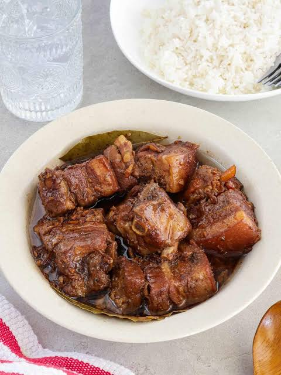

About Pork Adobo
Pork Adobo is one of the most popular and well-loved Filipino dishes. It is prepared by simmering pork in a flavorful mixture of soy sauce, vinegar, garlic, bay leaves, and black pepper. The combination of savory, sour, and slightly salty flavors makes this dish delicious and perfect to serve with steamed rice.

Recipe Information
| Preparation Time | 15 minutes |
|---|---|
| Cooking Time | 45–60 minutes |
| Servings | 4–5 people |
| Difficulty | Easy |
Ingredients
- 1 kilogram pork belly, cut into serving pieces
- 1/2 cup soy sauce
- 1/2 cup vinegar
- 1 cup water
- 1 whole garlic bulb, crushed
- 2–3 pieces bay leaves
- 1 teaspoon whole black peppercorns
- 1 tablespoon cooking oil
- 1 tablespoon sugar (optional)
Cooking Instructions
- Prepare the pork by cutting it into bite-sized pieces. Crush the garlic and set aside the other ingredients.
- In a bowl, combine the pork, soy sauce, and crushed garlic. Let it marinate for at least 30 minutes.
- Heat cooking oil in a pot over medium heat. Add the marinated pork and cook until lightly browned.
- Pour in the remaining marinade, vinegar, and water. Add the bay leaves and black peppercorns.
- Bring the mixture to a boil. Do not stir immediately after adding the vinegar.
- Lower the heat, cover the pot, and simmer for 45–60 minutes or until the pork becomes tender.
- Add sugar if desired, then adjust the seasoning according to your taste.
- Continue cooking until the sauce reaches your preferred consistency.
- Serve hot with steamed rice and enjoy your homemade Filipino Pork Adobo!
Watch How to Cook Pork Adobo
Watch the video below to learn how to prepare this delicious Filipino dish.
Recipe Feedback Form
We would love to hear your thoughts about this Pork Adobo recipe!